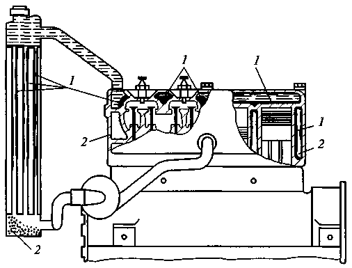
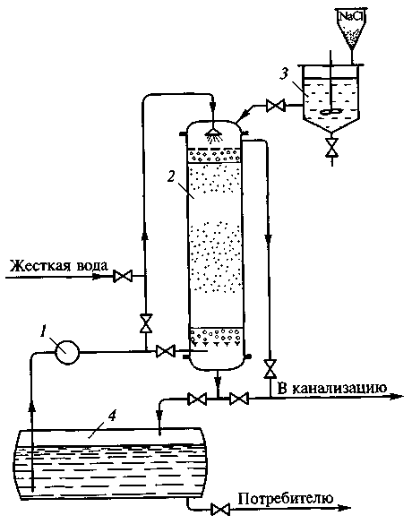
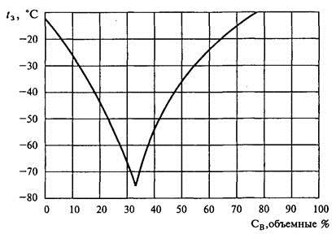
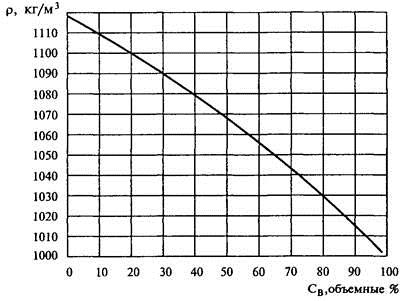
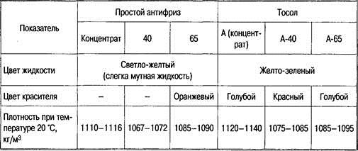
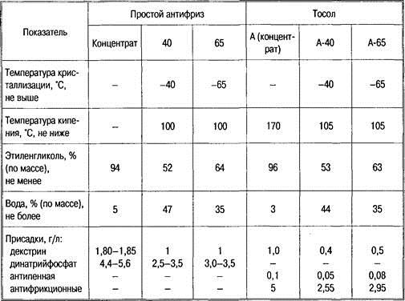

Тема 10
Жидкости для систем
охлаждения
Наряду
с топливом, маслом и смазками в современных автомобилях широко используются
технические жидкости (для охлаждения двигателей, обеспечения торможения и
амортизации автомобилей во время движения, приведения в действие механизмов,
силовых агрегатов и т.п.).
Технические
жидкости должны отвечать многообразным и специфичным требованиям, поэтому для
их приготовления используются многочисленные химические и синтетические
соединения: гликоли, углеводороды, спирты, глицерин, эфиры и др.
В
зависимости от назначения и свойств технические жидкости подразделяются на
охлаждающие, тормозные, для гидравлических систем, амортизаторные и пусковые.
Производятся также промывочные и очистительные жидкости — это этиловый спирт,
очистители стекол, различные моющие средства и др.
Назначение
и требования к охлаждающим жидкостям
При сгорании топлива в
двигателе часть тепла идет на нагрев стенок камеры сгорания и всего двигателя.
При достижении критической температуры двигатель перегревается, при этом
ухудшается наполнение цилиндров и условия смазывания, появляется детонация,
калильное зажигание, увеличивается расход топлива, снижается мощность
двигателя. Для поддержания нормальной температуры двигателя его охлаждают,
используя для этого охлаждающие жидкости.
К охлаждающим жидкостям
предъявляются следующие требования:
— высокая температура
кипения (во избежание образования паровых пробок и потерь жидкости);
— низкая температура
замерзания;
— высокая теплоемкость и
теплопроводность;
— высокая химическая и
физическая стабильность;
— коррозионная
пассивность;
— не вступать в реакцию с
резиновыми деталями;
— оптимальная вязкость;
— отсутствие образования
накипи;
— низкая стоимость и
недефицитность;
— нетоксичность и
пожаробезопасность.
При температурах выше
нуля всем перечисленным требованиям отвечает вода, основными преимуществами
которой являются безвредность, доступность, стоимость. Вязкость воды
обеспечивает легкость ее циркуляции в системе охлаждения. Вода обладает большой
теплоемкостью.
Использование
воды в качестве охлаждающей жидкости
Наиболее распространенной
жидкостью, применяемой для охлаждения, является вода. Она имеет самую высокую
теплоемкость 4,19 кДж/(кг·°С), большую теплопроводность, небольшую
кинематическую вязкость и большую теплоту испарения.
Однако вода обладает и
существенными недостатками, затрудняющими ее применение в качестве охлаждающей
жидкости. При 0 °С она замерзает, увеличиваясь в объеме примерно на 10 % и вызывая
разрушение системы охлаждения при дальнейшем понижении температуры окружающего
воздуха.
При использовании воды в
качестве охлаждающей жидкости образование отложений в системе охлаждения
двигателя определяется в основном наличием растворенных в воде солей, образующих
накипь, теплопроводность которой приблизительно в 100 раз меньше, чем
теплопроводность стали. Отложение накипи в системе охлаждения (рис. 1)
вызывает нарушение теплового режима работы двигателя, увеличение расхода
топлива и масла.
О количестве растворенных
в воде солей можно судить по ее жесткости, единицей измерения которой является
миллиграмм-эквивалент (мг-экв.). Мягкая вода содержит до 3 мг-экв. солей в 1 л,
вода средней жесткости — от 3 до 6 мг-экв., а жесткая — более 6 мг-экв.

Рис. 1. Типичные места
отложения накипи (7) и шлама (2) в системе охлаждения
автомобильных двигателей
Целесообразно применять
для охлаждения двигателя мягкую воду, не образующую накипь. При использовании
для этих целей воды средней жесткости возникает необходимость не реже двух раз
в год очищать систему охлаждения от образовавшейся накипи.
Применять жесткую воду
следует после предварительного ее умягчения (кипячения, обработки известью и
содой) или с добавлением противонакипных присадок (антинакипинов). Например,
калиевый хромпик К2Сr2О7 при концентрации
его от 5 до 10 г в 1 л воды способен превращать содержащиеся в ней соли в вещества,
не образующие накипи.
Применению любого
антинакипина должна предшествовать очистка системы охлаждения от образовавшейся
ранее накипи.
На рис. 2 приведена схема установки для умягчения жесткой воды.

Рис. 2. Схема стационарной катионитовой установки для умягчения жесткой
воды:
1 - насос; 2 — катионитовый фильтр с сульфированным
углем; 3 — мешалка для приготовления раствора поваренной
соли; 4 — сборник умягченной воды
Низкозамерзающие
жидкости
В современных
автомобильных двигателях в качестве охладителя применяют низкозамерзающие
охлаждающие жидкости, или антифризы.
Наибольшее
распространение получили этиленгликолевые антифризы, представляющие собой
раствор этиленгликоля в воде. Этиленгликоль — это двухатомный спирт СН2ОН—СН2ОН
— бесцветная и без запаха жидкость, кипящая при температуре 197 °С и
застывающая при -12 °С. Водные растворы этиленгликоля застывают при более
низкой температуре. Так, раствор, содержащий 67 % этиленгликоля и 33 % воды,
застывает при температуре —75 °С. Зависимости плотности и температуры
застывания антифриза от его состава представлены на рис. 3 и 4.

Рис. 3. Зависимость температуры
застывания водогликолевой жидкости от содержания в ней воды

Рис. 4.
Зависимость плотности водогликолевой жидкости от содержания в ней воды
Этиленгликолевые
антифризы имеют повышенную коррозионную активность к металлам и разрушают
резину. Для устранения этих недостатков в антифризы вводят присадки: декстрин,
предохраняющий от разрушения свинцово-оловянистый припой, алюминий и медь;
динатрийфосфат, защищающий черные металлы, медь и латунь. Иногда вводят
молибденовый натрий, предотвращающий коррозию цинковых и хромовых покрытий на
деталях системы охлаждения. В этом случае к марке антифриза добавляют индекс
«М».
Отечественной
промышленностью выпускаются следующие марки антифризов: простые антифризы — 40,
65, 40М, 65М; тосолы — Тосол А, Тосол А-40, Тосол А-65.
Тосолы отличаются от
простых антифризов наличием противопенных и антифрикционных присадок. Цифра в
марке антифриза показывает наивысшую температуру застывания.
Тосол А —
концентрированный этиленгликоль с присадками. Для получения антифризов марок 40
или 65 его необходимо растворить в соответствующем количестве дистиллированной
воды.
В антифризы вводят
краситель.
Значения некоторых
показателей антифризов представлены в табл. 3.1.
Определить температуру
застывания антифриза можно по его плотности и показателю преломления. Зная
коэффициент преломления антифриза, можно определить в нем содержание
этиленгликоля:

где n — коэффициент
преломления.
Таблица 1. Низкозамерзающие
охлаждающие жидкости


Особенности
антифриза
Этиленгликоль — сильный
яд, поэтому после контакта с ним необходимо тщательно вымыть руки.
При эксплуатации в первую
очередь испаряется вода, это изменяет состав, а следовательно, и температуру
застывания антифриза.
Температурный коэффициент
объемного расширения у антифризов больше, чем у воды, поэтому заливать его
следует на 5—8 % меньше, чем воды, или использовать в составе системы
охлаждения расширительный бачок.
Нельзя допускать
попадания в антифриз нефтепродуктов, так как в этом случае распадаются
присадки.
Контрольные
вопросы
1. Какие требования предъявляются к
охлаждающим жидкостям?
2. Назовите особенности антифриза.
3. Как влияет содержание воды в смеси
с этиленгликолем на температуру замерзания?